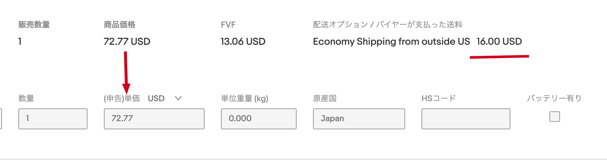

目次
当日のスライドの内容をもとに、記事の形でまとめました。進行の目安は、税関申告価額8分、けんさく君6分、利益早見表6分、シッピングポリシー5分、そのほかの紹介3分です。
PART1 税関申告価額
送料込みで売った商品を、税関にいくらで申告するかのお話です。きっかけ、考え方、発送先ごとのメリット、計算の手順、注意点の順に説明します。
なぜ気づいたか

CPaSS の注文画面。上に出ている「商品価格」が、下の「(申告)単価」にそのまま入ります。右の「バイヤーが支払った送料」は反映されません。
- 送料込みだと、送料の分まで申告される。商品価格に送料を含めて出品すると、その合計が申告単価になります。
- 同じ商品でも、設定で関税が変わる？送料の欄に送料と関税を入れて出品すれば、申告額が下がって関税が安くなるのではないか。eBay がすすめる送料込みは、不利になるだけではないか。そんな疑問が出ました。
- オレンジコネックスに問い合わせた。回答は、申告価格は関税や送料を引いた価格、つまり商品そのものの代金が正しい、というものでした。これが、この章の結論につながっています。
この回答は発表者が問い合わせて受けたもので、公式の案内として公開されているものではありません。最近あらためて担当者に「もっと大きくアナウンスしては」と尋ねたところ、価格や送料の設定はセラーごとに千差万別で方法を指定できないため、セラー側で調べてもらい、問い合わせがあれば回答する、という方針とのことでした。
要点
- 申告するのは、送料を抜いた商品代金です。販売価格をそのまま申告するのは誤りで、送料の分まで課税の対象になってしまいます。「運送申告価額」（配送会社に申告する、補償の上限を決める金額）と「税関申告価額」（税関に申告する、関税などを決める基準の金額）は別物です。米国税関（CBP）の資料でも、課税の基準は国際輸送・保険などの費用を除いた、買い手が売り手に支払う総額とされています。
- 送料を抜くと、発送先ごとにメリットがあります。参考例では、販売価格85ドルの内訳が商品代65ドルと送料20ドルで、税関申告価額は 85 − 20 ＝ 65ドルです（関税18ドルは販売価格に入れず、シッピングポリシーの送料の欄で別に請求します）。米国向けは、送料20ドル × 関税率12% × 150円 ＝ 360円分の関税がかからなくなります。送料100ドルなら1,800円で、送料が高いほど差も大きくなります。米国以外は国によって計算方法が異なります。EU・英国は税関が輸送費を別に加算するため、送料を混ぜて申告すると重なって高い課税価格になるおそれがあります（EU関税法典第71条(1)(e)）。金額はすべて説明用の参考例です。
- 計算は引き算ひとつで、拡張機能が自動でやってくれます。「HSコードワークシート作成君」の「申告価格の計算」を使い、画面の番号の順に5つの操作をします。式は「販売価格（USD）−（運送料金＋混雑時割増金＋燃料割増金）÷ 為替レート」です。例として、販売価格112.00ドルから、送料4,227円（2,797円＋98円＋1,332円）を157.27円で割った26.88ドルを引くと、申告価格は85.12ドルになります。
気をつける4つのこと
- 同梱発送は、送料を商品ごとに割合で分けて（按分して）から、それぞれの商品代から引きます。
- 引きすぎないこと。申告価格が実際の商品代を下回ると過少申告になります。
- 引くのは実際の運送費だけです。推定関税や処理手数料は引きません。
- 補償用の「運送申告価額」の欄とは別です。
👉 詳しい手順の解説記事：https://naokijodan.github.io/ebay-declared-value-guide/
PART2 けんさく君
テラピークとメルカリの検索条件、そしてセラーを保存しておき、いつもの検索をワンクリックで開けるようにするChrome拡張機能（サイドパネル）です。リサーチのたびに同じ条件を入れ直す手間をなくします。
- 検索条件とセラーを保存して、ワンクリックで開きます。パネルの中でキーワード・期間・カテゴリ・商品の状態・出品形式・価格・出品者所在地・並び順などをまとめて入れ、「テラピークを開く」を押すと、その条件の検索結果が新しいタブで開きます。よく使う検索は名前を付けて保存でき、一覧の「開く」を押すだけで同じ検索が再現されます。期間は日付ではなく「30日」のように保存するので、いつ開いても直近30日になります。参考にしているセラーも、表示名とメモを付けて保存できます。見ているページの上で右クリックして「けんさく君に保存」を選ぶ方法もあります。
- 保存した検索条件はフォルダで整理できます（v1.5.0）。100件以上ためられます。保存するときに新しいフォルダを作れて、フォルダを削除しても中身は「未分類」に移るだけで消えません。一覧の上の窓で絞り込みができ（保存名・キーワード・除外キーワード・フォルダ名が対象）、並び順は登録順・名前順・最近開いた順から選べて、選んだ順は次回も続きます。以前の保存データは、新しい版で最初にパネルを開いたときに自動で引き継がれます。
- 文字を選んで右クリックすると、どのページからでも検索できます（v1.4.0）。「“文字”をメルカリで検索」は新しいタブですぐメルカリを検索し、「“文字”をけんさく君で検索」はサイドパネルを開いて、テラピークとメルカリ両方のキーワード欄に文字を入れます（検索は自分で「開く」を押します）。メルカリには、商品の状態「新品〜やや傷や汚れあり」・送料込み・販売中・通常出品の4つが既定条件として自動で付きます。選んだ文字だけを受け取り、ページの内容やURLは読みません。
右クリックは、パネルの中ではなくページの上で行います。右クリックのメニューが出るのはebay.comとmercari.comで、ほかのサイトはURLを貼り付けて保存します。
👉 Chrome ウェブストア：https://chromewebstore.google.com/detail/lglbjdkepaokbfgeapogenjmadlmkbnk
👉 テラピークのJapan絞り込みガイド：https://naokijodan.github.io/ebay-research-japan-filter-guide/
PART3 利益早見表
入れるのは、仕入れと送料だけ。広告費率と利益の組み合わせを表にして、オファー対応と仕入れ判断に使います。拡張機能はサイドパネルで商品ページの横に表示でき、同じ内容のウェブ版もあります。手数料・関税・為替は設定に置いておくので毎回入れ直す必要がなく、為替は右上のボタンで最新を取得できます。
- オファーは、いくらまで受けられるかが分かります。例（仕入れ5,000円・送料1,500円・広告費率10%、為替157.32円）では、利益率0%で出品価格59.03ドル（利益0円）、5%で63.57ドル（500円）、10%で68.86ドル（1,083円）、15%で75.12ドル（1,772円）です。62ドルのオファーが来たら、59.03ドルより高いので赤字ではなく、63.57ドルより低いので利益率5%には届かない、とすぐ判断できます。利益率0%の行が損益ゼロの線で、オファーの下限の目安になります。
- この価格で売るなら、仕入れはいくらまでかが分かります。「仕入れ価格早見表」のタブに切り替え、売れそうな価格と送料を入れます。例（販売価格100ドル・送料1,500円・広告費率10%）では、仕入れ価格の上限は利益率0%で9,512円、5%で8,725円、10%で7,938円、15%で7,152円です。仕入れ値が7,500円なら、利益率10%は狙えて、15%には届きません。
- 送料計算と電卓も、同じ画面で使えます。送料計算は、重さとサイズを入れると6つの配送方法（ePacket／Cpass-Economy／EMS／Cpass-FedEx／Cpass-DHL／eLogistics）の送料を表示し、送れない方法は「対象外」と出ます。「この送料を使う」で送料の欄に入ります。電卓は、コピーした金額を貼り付けると数字だけに整え（US $45.99 → 45.99）、円とドルの換算や、結果を仕入れ・送料・価格の欄に入れるボタンが付いています。
金額は設定値に基づく目安です。実際の手数料・関税・送料・為替とは異なる場合があります。
👉 ウェブ版：https://naokijodan.github.io/profit-matrix/
👉 Chrome ウェブストア：https://chromewebstore.google.com/detail/eieeoceidiibbdahkjcnichcdmieghel
PART4 シッピングポリシーの変更
エコノミーの配送を、SpeedPAK Economyで約束する形から「日本郵便」で約束する形に切り替えた理由と、その中身を説明します。
a. きっかけと「約束」の考え方
きっかけは、Zonos（ゾノス）で関税を前払いできるようになったことです。アメリカ向けの郵便で関税を払う形で送るには、Zonosでの前払いが必要でした。
- 段階1（ポリシー切り替えは8月10日）：まずアメリカ向け。Zonosで関税を前払いできるようになり、日本郵便の国際郵便（エコノミー）がアメリカ向けに使えるようになりました。
- 段階2（10月1日から、同日に切り替え）：ヨーロッパの一部も。日本郵便と提携するZonosが、EUの11か国宛てで関税の前払いに対応し、その国にも日本郵便のエコノミーが使えるようになりました。
これで「日本郵便のエコノミー」が、SpeedPAK Economyと並ぶ選択肢になりました。
○ 日本郵便のエコノミーで約束
約束は11〜23営業日。郵便で送っても、SpeedPAK Economy（8〜12営業日）で送ってもかまいません。約束より速く届く分はOKです。
× SpeedPAK Economyで約束
約束は8〜12営業日。郵便で送ると約束より遅れるおそれがあり、ポリシー違反になります。
日本郵便のエコノミーの方が安いケースが多いので、郵便で約束しておけば、毎回「安い方・使える方」を選べます。
日数はアメリカ向けの例（Economy Shipping from outside US ／ eBay SpeedPAK Economy）です。ヨーロッパ向けも同じ考え方ですが、日数は異なります。
b. 何を変えたか
実際に変えたのは次の2つです。配送サービスの名前をSpeedPAK Economyから日本郵便側のエコノミーに変えただけで、送料は据え置きです。
| 日付 | 向け先 | 変更前 | 変更後 | 送料 |
|---|---|---|---|---|
| 8月10日 | アメリカ向け | eBay SpeedPAK Economy | Economy Shipping from outside US | 据え置き |
| 10月1日 | ヨーロッパ向け（フランス・ヨーロッパのレーン） | eBay SpeedPAK Economy | Economy International | 据え置き |
10月1日の対象は中古向けのポリシー（eco_used・game_used）です。9月7日には、アメリカ向けにSpeedPAK Economy／Expeditedを追加料金の選択肢として追加しました。
Zonosで前払いできるヨーロッパの国・地域
EU 11か国：イタリア、エストニア、オランダ、スウェーデン、スペイン、スロバキア、デンマーク、フィンランド、フランス、マルタ、ルクセンブルク。
ほかに、アンドラ、モナコ、グアドループ、フランス領ギアナ、マルティニーク（Zonosアプリの配送先一覧、2026年10月12日時点）。
対応していない国はSpeedPAKで送る
ドイツ、オーストリア、ベルギー、チェコ、ポルトガルなど。送料を据え置いたのは、SpeedPAKでしか届けられない国が残るためです。
c. 国別の対応表（日本郵便公式）
日本郵便の公式の表で、国ごとに使える支払方法が決まっています。eBayの150ユーロ未満の注文はIOSS利用ありの扱いです（VATはeBayが徴収します）。下の表は、日本郵便のお知らせ（続報4、2026年10月1日）の「IOSS制度の利用有無およびDDP／DAPに応じた国別差出条件」を、そのまま転記したものです（32の国・地域）。
表は横にスクロールできます。
| 国・地域 | IOSS有り DDP Zonosで前払い | IOSS有り DAP 受取人払い | IOSS無し DAP |
|---|---|---|---|
| アイルランド | × | 〇 | 〇 |
| イタリア | 〇 | 〇 | 〇 |
| エストニア | 〇 | 〇 | 〇 |
| オーストリア | × | × | 〇 |
| オランダ | 〇 | 〇 | 〇 |
| ガドループ | 〇 | × | 〇 |
| キプロス | × | 〇 | 〇 |
| ギリシャ | × | 〇 | 〇 |
| クロアチア | × | 〇 | 〇 |
| スウェーデン | 〇 | 〇 | 〇 |
| スペイン | 〇 | 〇 | 〇 |
| スロバキア | 〇 | 〇 | 〇 |
| スロベニア | × | 〇 | 〇 |
| チェコ | × | × | 〇 |
| デンマーク | 〇 | × | 〇 |
| ドイツ | × | × | 〇 |
| ハンガリー | × | 〇 | 〇 |
| フィンランド | 〇 | × | 〇 |
| フランス | 〇 | × | 〇 |
| 仏領ギアナ | 〇 | × | 〇 |
| ブルガリア | × | 〇 | 〇 |
| ベルギー | × | × | 〇 |
| ポーランド | × | 〇 | 〇 |
| ポルトガル | × | × | 〇 |
| マルタ | 〇 | 〇 | 〇 |
| マルチニーク | 〇 | × | 〇 |
| モナコ | 〇 | × | 〇 |
| ラトビア | × | 〇 | 〇 |
| リトアニア | × | 〇 | 〇 |
| ルーマニア | × | 〇 | 〇 |
| ルクセンブルク | 〇 | × | 〇 |
| レユニオン | × | × | 〇 |
表記は公式の表のとおりです。「ガドループ」はグアドループ、「仏領ギアナ」はフランス領ギアナのことです。アンドラは公式のこの表に載っていません（Zonosアプリの一覧にのみ記載があります）。IOSS利用なし（受取人払い）の郵便は、32の国・地域すべてで差し出せます。
3つのグループにまとめると
受取人払いだけの11か国は、Zonosで前払い（DDP）はできませんが、受取人が関税等を払う形（DAP）で郵便で差し出せます。ラベルは国際郵便マイページなどで作ります。これまではヨーロッパ全体をSpeedPAK Economyで約束するしかありませんでした。郵便で約束しておけば、国ごとにZonos（郵便）とSpeedPAKの安い方を選べます。SpeedPAKの送料がとても高い国もあるので、差は大きくなります。
出典：日本郵便 お知らせ（続報4、2026年10月1日）
👉 https://www.post.japanpost.jp/service/send/oversea/information/2026/1001_01.html
d. 2027年2月1日からの国際郵便料金改定
2027年2月1日から、日本郵便の国際郵便料金が変わります（2026年10月9日発表）。理由は国際輸送費と海外配達費の上昇で、EMS・小包・小形包装物・国際エアパケットなどが対象です。下に、セラーがよく使う2つの料金表を公式の新料金表からそのまま転記します（重さの区分は20段階、地帯は5つ）。
地帯の区分
- 第1地帯：中国・韓国・台湾
- 第2地帯：アジア（中国・韓国・台湾を除く）
- 第3地帯：オセアニア・中近東・カナダ・メキシコ・ヨーロッパ
- 第4地帯：米国（海外領土を含む）
- 第5地帯：中南米（メキシコを除く）・アフリカ
ヨーロッパは第3地帯、アメリカは第4地帯です。第3地帯にはカナダ・オセアニア・中近東も含まれます。
表は横にスクロールできます。
| 重量 | 第1地帯 | 第2地帯 | 第3地帯 | 第4地帯 | 第5地帯 |
|---|---|---|---|---|---|
| 100gまで | 620円 | 680円 | 800円 | 1,290円 | 950円 |
| 200gまで | 770円 | 830円 | 990円 | 1,550円 | 1,220円 |
| 300gまで | 920円 | 980円 | 1,180円 | 1,810円 | 1,490円 |
| 400gまで | 1,070円 | 1,130円 | 1,370円 | 2,070円 | 1,760円 |
| 500gまで | 1,220円 | 1,280円 | 1,560円 | 2,330円 | 2,030円 |
| 600gまで | 1,370円 | 1,430円 | 1,750円 | 2,590円 | 2,300円 |
| 700gまで | 1,520円 | 1,580円 | 1,940円 | 2,850円 | 2,570円 |
| 800gまで | 1,670円 | 1,730円 | 2,130円 | 3,110円 | 2,840円 |
| 900gまで | 1,820円 | 1,880円 | 2,320円 | 3,370円 | 3,110円 |
| 1.0kgまで | 1,970円 | 2,030円 | 2,510円 | 3,630円 | 3,380円 |
| 1.1kgまで | 2,120円 | 2,180円 | 2,700円 | 3,890円 | 3,650円 |
| 1.2kgまで | 2,270円 | 2,330円 | 2,890円 | 4,150円 | 3,920円 |
| 1.3kgまで | 2,420円 | 2,480円 | 3,080円 | 4,410円 | 4,190円 |
| 1.4kgまで | 2,570円 | 2,630円 | 3,270円 | 4,670円 | 4,460円 |
| 1.5kgまで | 2,720円 | 2,780円 | 3,460円 | 4,930円 | 4,730円 |
| 1.6kgまで | 2,870円 | 2,930円 | 3,650円 | 5,190円 | 5,000円 |
| 1.7kgまで | 3,020円 | 3,080円 | 3,840円 | 5,450円 | 5,270円 |
| 1.8kgまで | 3,170円 | 3,230円 | 4,030円 | 5,710円 | 5,540円 |
| 1.9kgまで | 3,320円 | 3,380円 | 4,220円 | 5,970円 | 5,810円 |
| 2.0kgまで | 3,470円 | 3,530円 | 4,410円 | 6,230円 | 6,080円 |
| 重量 | 第1地帯 | 第2地帯 | 第3地帯 | 第4地帯 | 第5地帯 |
|---|---|---|---|---|---|
| 100gまで | 1,010円 | 1,070円 | 1,190円 | 1,680円 | 1,340円 |
| 200gまで | 1,160円 | 1,220円 | 1,380円 | 1,940円 | 1,610円 |
| 300gまで | 1,310円 | 1,370円 | 1,570円 | 2,200円 | 1,880円 |
| 400gまで | 1,460円 | 1,520円 | 1,760円 | 2,460円 | 2,150円 |
| 500gまで | 1,610円 | 1,670円 | 1,950円 | 2,720円 | 2,420円 |
| 600gまで | 1,760円 | 1,820円 | 2,140円 | 2,980円 | 2,690円 |
| 700gまで | 1,910円 | 1,970円 | 2,330円 | 3,240円 | 2,960円 |
| 800gまで | 2,060円 | 2,120円 | 2,520円 | 3,500円 | 3,230円 |
| 900gまで | 2,210円 | 2,270円 | 2,710円 | 3,760円 | 3,500円 |
| 1.0kgまで | 2,360円 | 2,420円 | 2,900円 | 4,020円 | 3,770円 |
| 1.1kgまで | 2,510円 | 2,570円 | 3,090円 | 4,280円 | 4,040円 |
| 1.2kgまで | 2,660円 | 2,720円 | 3,280円 | 4,540円 | 4,310円 |
| 1.3kgまで | 2,810円 | 2,870円 | 3,470円 | 4,800円 | 4,580円 |
| 1.4kgまで | 2,960円 | 3,020円 | 3,660円 | 5,060円 | 4,850円 |
| 1.5kgまで | 3,110円 | 3,170円 | 3,850円 | 5,320円 | 5,120円 |
| 1.6kgまで | 3,260円 | 3,320円 | 4,040円 | 5,580円 | 5,390円 |
| 1.7kgまで | 3,410円 | 3,470円 | 4,230円 | 5,840円 | 5,660円 |
| 1.8kgまで | 3,560円 | 3,620円 | 4,420円 | 6,100円 | 5,930円 |
| 1.9kgまで | 3,710円 | 3,770円 | 4,610円 | 6,360円 | 6,200円 |
| 2.0kgまで | 3,860円 | 3,920円 | 4,800円 | 6,620円 | 6,470円 |
国際エアパケットは、国際特定記録とする航空扱いの小形包装物です。書状や印刷物なども改定されます。
EMS・航空小包の「特別追加料金」は0円に
上昇分を本体料金に反映するため、EMS・航空小包の特別追加料金は、改定と同時に0円になります。
公式ページには現行料金との比較が出ていないため、この記事では値上げ幅には触れません。今の料金は、日本郵便の現行料金表と比べてご確認ください。
出典：日本郵便 お知らせ「国際郵便料金の一部改定のお知らせ（2027年2月1日から）」
👉 公式ページ：https://www.post.japanpost.jp/service/send/oversea/information/fee_revision_2027/
👉 公式の新料金表（PDF）：https://www.post.japanpost.jp/service/send/oversea/information/fee_revision_2027/charges.pdf
e. 皆さんがすること
- 自分のポリシーの「約束」を確認します。8〜12営業日の約束ならSpeedPAK Economy（CPaSS）一択です。11〜23営業日なら、郵便でもSpeedPAKでもかまいません。
- 郵便で送るなら、Zonosで関税を前払いします。アメリカ向けは手数料が1件あたり約570円で、差し出しは各都道府県の比較的大きな郵便局だけです。ヨーロッパ向けは、国際郵便を扱うすべての郵便局で差し出せます。
- しきい値を超えたらクーリエで送ります。EUは150ユーロ、イギリスは135ポンドです。超えるとSpeedPAK Economyは使えず、SpeedPAK Expeditedで送ります。判定は注文単位です。
詳しい手順は、次の3つの解説記事にあります。
👉 エコノミー発送まるわかりガイド：https://naokijodan.github.io/ebay-economy-shipping-guide/
👉 SpeedPAK Economy EU27カ国拡大への対応：https://naokijodan.github.io/ebay-eu27-economy-guide/
👉 EU・イギリス宛の注文が「しきい値」を超えたら？：https://naokijodan.github.io/ebay-eu-over150-guide/
開発中の拡張機能
当日は「枠だけ」の紹介です。eBay管理ツール（Chrome拡張機能・名前は検討中）は、自分のブラウザからeBayのAPIに直接つないで、出品やシッピングポリシーなどを確認・管理できるツールです。
- 鍵も情報も自分の手元だけに置き、こちらのサーバーは通しません（この方式で問題ないとeBayに確認済みです）。
- まずモニターを2〜3人募集して使ってもらい、その後に公開を判断します。
関連リンク一覧
- 税関申告価額の解説記事：https://naokijodan.github.io/ebay-declared-value-guide/
- けんさく君（Chrome ウェブストア）：https://chromewebstore.google.com/detail/lglbjdkepaokbfgeapogenjmadlmkbnk
- テラピークのJapan絞り込みガイド：https://naokijodan.github.io/ebay-research-japan-filter-guide/
- 利益早見表（ウェブ版）：https://naokijodan.github.io/profit-matrix/
- 利益早見表（Chrome ウェブストア）：https://chromewebstore.google.com/detail/eieeoceidiibbdahkjcnichcdmieghel
- エコノミー発送まるわかりガイド：https://naokijodan.github.io/ebay-economy-shipping-guide/
- SpeedPAK Economy EU27カ国拡大への対応：https://naokijodan.github.io/ebay-eu27-economy-guide/
- EU・イギリス宛の注文が「しきい値」を超えたら？：https://naokijodan.github.io/ebay-eu-over150-guide/
- 発表スライド：https://claude.ai/artifact/2bTBcGJmsVuF2w7LTJF9k4
- 拡張機能の一覧：https://naokijodan.github.io/bulk-tools-guide/extensions.html